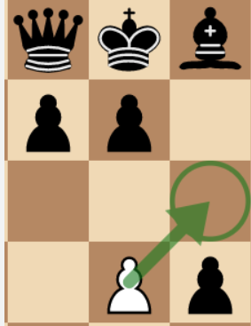

체스하쉴? 앙파상
home
체스의 기물
스테일 메이트
앙파상
캐슬링
오프닝
체크메이트
앙파상의 조건
잡는 기물과 잡히는 기물 양쪽 모두 폰이다.
앙파상으로 잡은 폰은 반드시 옆의 행으로 이동된다.
앙파상을 하기 위한 폰은 반드시 5번째 행에 위치해 있어야 합니다.
앙파상으로 잡히는 폰은 반드시 이전 수에 앞으로 두 칸 전진했어야 합니다.
앙파상은 상대의 폰이 두 칸 전진한 바로 그다음 수에만 할 수 있습니다. 만약 앙파상을 하지 않으면 그 기회를 잃게 됩니다.
